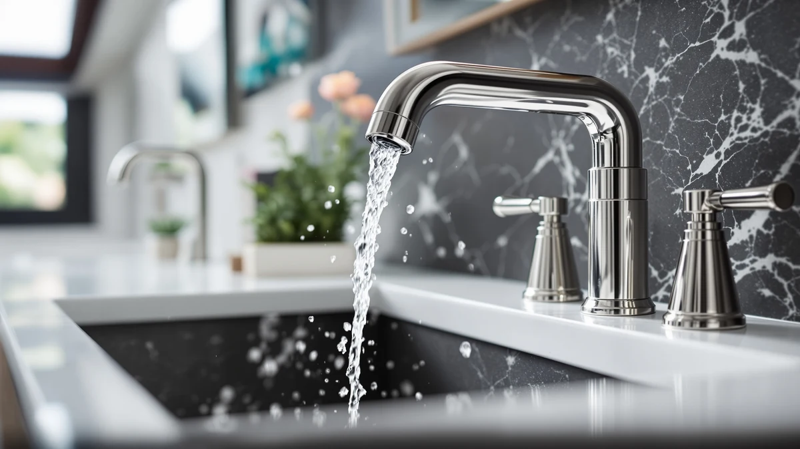

Best RV Bathroom Faucets of 2026: Compact Picks for Campers
Prices and picks verified as of August 2026. Independent, reader-supported reviews.


Quick Answer
The EXCELFU RV Bathroom Sink Faucet is our top pick for most rigs: it is compact, non-metallic so it will not add weight or a metallic taste to stored tank water, and priced at $19.99. If you need a wider 8-inch spread or a two-handle layout instead, several other picks below fit standard 4-inch and 8-inch RV vanities equally well.
Our pick: EXCELFU RV Bathroom Sink Faucet — $19.99 Check Price on Amazon
Bottom line: our top pick is the EXCELFU RV Bathroom Sink Faucet at $19.99. The best budget option is the Phiestina 4 Inch 2 Handle Centerset Matte Black Lead-Free at $25.99.
Things to Know Before You Buy
- Measure your hole spread first. RV vanities use a single hole, a 4-inch centerset, or a wider widespread deck, usually 6 to 8 inches, and a faucet built for the wrong spread will not seat in the deck plate.
- Non-metallic and lightweight bodies matter on the road. Constant vibration and a rig's payload limit favor a faucet like the EXCELFU that skips a heavy brass casting without giving up durability where it counts.
- Low pump pressure changes what "works well" means. RV water pumps typically run 40 to 45 psi versus 60-plus psi from a municipal line, so an open aerator will feel stronger at RV pressure than one built around residential flow.
- Lead-free stainless steel is worth checking for tank water. Both Hurran faucets on this list spell out lead-free stainless construction, which matters when water sits in a fresh tank for days at a time.
- A deck plate earns its keep on replacement jobs. If you are swapping out a factory RV faucet with one built for a different hole spread, look for a pick that ships with a cover plate to hide the old mounting holes.
The best RV bathroom faucets solve a problem full-size home faucets were never designed for: a vanity the size of a cutting board, a water pump that rarely pushes past 45 psi, and hundreds of miles of vibration that will loosen anything installed halfway. A faucet pulled from a big-box renovation aisle is often too tall, too heavy, or built around a hole spread that does not exist in a camper. We compared eight RV-ready faucets, most sized for a 4-inch centerset or a compact single hole, to find the ones that fit small RV and travel trailer sinks without giving up a real stream of water.
Our top pick, the EXCELFU RV Bathroom Sink Faucet, is a $19.99 non-metallic faucet built specifically for campers, motorhomes, and travel trailers, with a 6-inch spout that clears a shallow RV basin and a single lever handle that is easy to work with a wet hand. If you have a wider 8-inch spread or want the two-handle control common on small bathroom sinks, the Hurran and Phiestina picks below cover those layouts too. If you are swapping a cracked factory unit rather than starting from scratch, our faucet replacement guide walks through that process separately.
A note on how we built this list: these are current Amazon listings, and most have little or no verified owner review history yet, so we are not going to invent a star rating or a testing lab to sound more authoritative than we are. What we can tell you, based on each faucet's hole spread, material, spout design, and price, is which ones are actually sized and built for RV plumbing rather than simply carrying the label in the title.
Why You Should Trust Us
I'm Ilane Tall, and I cover bathroom fixtures for people furnishing something other than a standard house, including RVs, tiny homes, and rentals with odd plumbing. RV bathrooms are a specific problem because the sink, the water pressure, and the mounting hardware all deviate from what a typical home faucet assumes, and plenty of listings put "RV" in the title without actually being built around those constraints.
I compared these eight faucets on hole spread, spout height, material, and price rather than claiming to have installed each one in a moving vehicle. Where a listing has no track record yet, I say so directly instead of dressing it up. If you want the reasoning behind how we cover every faucet on this site, our how we research page lays out the full method.
How We Picked
We started with hole spread, because it is the single biggest reason an RV faucet swap fails. Most RV vanities take either a single-hole cutout or a 4-inch centerset, with a smaller share of larger rigs using a wider widespread deck, so this list covers both the compact and the wider layouts rather than assuming one size fits every camper.
From there we prioritized weight and material. A faucet built from solid brass looks the part in a house, but in an RV it adds weight you are hauling down the highway and gives corrosive tank water more metal to work on over time. We favored lead-free stainless steel and non-metallic bodies like the EXCELFU's, and we noted every faucet's finish so you can match brushed nickel or matte black to the rest of your rig.
We also kept a spread of prices, from the $19.99 EXCELFU up to the $49.98 Ultimate Unicorn pull-down, so there is a sensible option whether you are outfitting a budget travel trailer or a fuller-featured motorhome. If your sink falls outside these hole spreads, our centerset faucet guide and single-hole faucet guide cover other configurations in more depth.
How We Compared
Here is the honest version of our process. Most of these are recent listings without a meaningful body of verified owner reviews, and we are not going to pretend we hooked each one up to a 12-volt RV pump for a week to manufacture a test score. Our comparison is based on published specs, hole spread, material, and price rather than an extended trial run.
For each faucet we checked the hole spread against common RV cutouts, the spout height against a typical shallow RV basin, and the handle style, since a single lever is easier to operate one-handed at a cramped sink than two separate handles. We also compared the stated material, because a lead-free stainless or non-metallic build matters more in an RV that stores water in a tank than it does on a faucet fed straight from a municipal line.
Where a listing does not disclose a spec we would normally rely on, such as flow rate, we left it out rather than guessing. As these faucets pick up real owner feedback, we will update this guide to reflect it.
Our Picks

EXCELFU RV Bathroom Sink Faucet
What we like
- Purpose-built for campers, motorhomes, travel trailers, and boats rather than adapted from a home faucet
- Non-metallic body sheds weight and avoids the metallic taste some owners report from brass sitting on tank water
- 6-inch spout clears a shallow RV basin better than a low-profile home faucet
- Single lever handle is easy to operate with one wet hand at a cramped sink
Flaws but not dealbreakers
- Non-metallic construction will not have the same heft as a stainless faucet
- Single lever offers less fine temperature control than a two-handle widespread
- A newer listing with no established owner review history yet
| Material | Brass + finish |
| Size | — |
The EXCELFU is the faucet we would put in most RVs first, mainly because it is not a repurposed home faucet with an RV sticker on the box. It is built at 4 inches with a 6-inch-high spout, sized to clear the shallow basin most campers and travel trailers use, and it uses a single classical lever rather than two separate handles, which is easier to reach one-handed when you are also holding a toothbrush or bracing against a moving rig.
At $19.99 it is also the least expensive pick on this list, and the non-metallic body is a deliberate trade-off: you lose some of the heft of a brass faucet, but you gain lower weight for a rig that already has a payload limit, and you avoid the metallic taste some owners report from brass fixtures sitting on stored tank water. It is a new listing without a track record of owner reviews yet, so treat it as the well-specified budget pick rather than a proven long-hauler, and check our replacement guide if you are swapping out a cracked OEM unit.

Phiestina 4 Inch 2 Handle
What we like
- 360-degree swivel spout rotates fully, useful for rinsing a small RV basin from multiple angles
- Works with either a 2-hole or 3-hole 4-inch centerset deck, so it fits more sink cutouts than a fixed-spread faucet
- Ships with a pop-up drain and water supply lines, so there is less to source separately for an install
- Matte black lead-free construction matches the darker fixture trend at a lower price than premium brands
Flaws but not dealbreakers
- Two separate handles take more counter reach than a single-lever design in a tight RV vanity
- Matte black finish shows water spots and mineral residue more readily than a brushed finish
- A newer listing with no established owner review history yet
| Material | Brass + finish |
| Size | — |
The Phiestina earns its spot for one reason: it is not locked into a single hole spread. A 2-3 hole 4-inch centerset base means it will seat in either a 2-hole or 3-hole vanity, which matters in an RV where you may not know the exact factory cutout until you pull the old faucet. The 360-degree swivel spout is useful in a small basin, letting you angle the flow toward a corner or a shallow bowl without repositioning the whole faucet.
At $25.99, it undercuts most of the widespread options on this list while still including a pop-up drain and both supply lines in the box, which keeps the total project cost down for a DIY swap. The trade-off against the EXCELFU above is the two-handle layout, which needs more counter space and two motions instead of one to adjust temperature. It is best suited to a camper or small vanity where a flexible hole spread matters more than one-handed operation.

Bathroom Faucets for Sink 3
What we like
- Lead-free stainless steel construction is a meaningful detail for water that sits in an RV fresh tank
- 8-inch widespread three-hole layout fits bigger RV and farmhouse-style vanities beyond compact campers
- Includes a matching pop-up drain and both supply lines, cutting down on separate parts to source
- Matte black finish hides water spots better than a polished faucet would in daily RV use
Flaws but not dealbreakers
- The 8-inch spread will not fit a compact single-hole or 4-inch RV sink, so measure first
- Two-handle widespread design takes up more vanity space than a single-lever faucet
- A newer listing with no established owner review history yet
| Material | Brass + finish |
| Size | 8 Inch |
This Hurran is built for the RV owners whose vanity is closer to a small home sink than a camper cutout: an 8-inch three-hole widespread with room for two separate handles. That extra spread comes with a real upside, lead-free stainless steel construction throughout, which matters more in a rig where water can sit in a fresh tank for days at a time than it does on a faucet fed straight from a municipal line.
At $39.98 it sits in the middle of this list, and the price includes a matching pop-up drain and both supply lines, so the box covers most of what a straightforward swap needs. The matte black finish is also a practical choice for the road: it hides the water spots and mineral film that hard RV tank water tends to leave behind far better than a polished finish does. If your sink only has a single hole or a 4-inch spread, this one will not fit; check our centerset faucet picks instead.

Bathroom Faucets for Sink 3
What we like
- Same lead-free stainless steel, 8-inch widespread build as the matte black Hurran, in a brushed nickel finish
- Brushed texture scatters light and hides water spots even more than the matte black version
- Includes a matching pop-up drain and both supply lines
- Widespread layout gives more room between hot and cold handles for RV vanities with the space to spare
Flaws but not dealbreakers
- Costs about $4 more than the matte black version of the same faucet
- Same 8-inch spread limits it to wider RV and farmhouse-style sinks
- A newer listing with no established owner review history yet
| Material | Brass + finish |
| Size | 8 Inch |
This is the brushed nickel sibling of the matte black Hurran above, built on the same 8-inch widespread frame with the same lead-free stainless steel construction. The only real differences are the finish and a roughly $4 price gap, so the choice mostly comes down to which look matches the rest of your RV or bathroom hardware.
Brushed nickel has a slight practical edge over matte black in one respect: its textured surface scatters light in a way that hides water spots and the chalky residue RV tank water can leave behind, if anything better than a matte finish does. At $43.98 it is one of the pricier picks here, but like its matte black counterpart it ships with a pop-up drain and supply lines, so there is little left to buy separately once it arrives.

RNDIOZD Matte Black Bathroom Faucets
What we like
- Waterfall spout spreads the flow wide over a shallow RV basin instead of a narrow single stream
- Single handle mixer tap is quick to adjust one-handed in a moving or cramped RV bathroom
- Works on either a single-hole mount or a 3-hole deck, and ships with a deck plate to cover unused holes
- Includes pop-up drain and supply hoses in the box
Flaws but not dealbreakers
- Waterfall spouts sit lower and wider, so check clearance under any RV medicine cabinet or mirror
- Matte black shows water spots more readily than a brushed finish
- A newer listing with no established owner review history yet
| Material | Brass + finish |
| Size | — |
The RNDIOZD stands out on this list for its waterfall spout, a flat, wide opening that spreads water across more of a shallow RV basin instead of pushing it out as one narrow stream. Paired with a single handle mixer, it is quick to dial in temperature with one hand, which matters more in an RV bathroom than at home, since you are often also bracing yourself against the counter.
At $26.99 it undercuts the widespread options here, and the mounting is flexible: it works on a single-hole deck or a 3-hole layout, and it includes a deck plate to hide the unused holes if you are replacing an older widespread faucet with this single-handle design. The one thing to check before buying is vertical clearance, since a waterfall spout sits lower and wider than a standard spout and can crowd a low RV mirror or cabinet.

Matte Black Bathroom Sink Faucet
What we like
- 4-inch 3-hole centerset is one of the most common RV sink cutouts, a safer bet if you have not measured yet
- Stainless steel two-handle build gives separate hot and cold control at a lower price than the 8-inch widespread picks
- Includes a matching pop-up drain and supply lines
- Matte black finish hides water spots between cleanings
Flaws but not dealbreakers
- 4-inch spread will not fit an 8-inch widespread cutout, so it is not interchangeable with the wider Hurran picks above
- Two-handle layout needs more counter reach than a single-lever faucet
- A newer listing with no established owner review history yet
| Material | Brass + finish |
| Size | 4 Inch |
This is the 4-inch centerset version of the Hurran design, sized for the standard 3-hole cutout that shows up in a large share of RV and small home vanities. If you are not sure which spread your sink uses, 4-inch centerset is the safer default to check first, since it is by far the more common of the two RV layouts on this list.
At $32.19 it splits the difference between the budget EXCELFU and the pricier 8-inch widespread options, and the stainless steel two-handle build gives you separate hot and cold control that the single-lever picks do not. It ships with a matching pop-up drain and supply lines, and the matte black finish holds up visually against RV tank water the same way it does on the larger 8-inch version above.

Ultimate Unicorn Pull Down Bathroom
What we like
- Pull-down sprayer head adds rinsing reach that a fixed spout cannot match in a small RV sink
- Anti-splash aerator reduces water bouncing out of a shallow basin, a real issue in compact RV sinks
- 4-inch 3-hole centerset fits the same common cutout as the standard picks on this list
- Brushed nickel finish with two-handle control for precise temperature adjustment
Flaws but not dealbreakers
- The most expensive faucet on this list at $49.98
- Pull-down hose is a moving part the simpler fixed-spout picks do not have to maintain
- A newer listing with no established owner review history yet
| Material | Brass + finish |
| Size | 4 Inch |
The Ultimate Unicorn is the pull-down pick on this list, and it earns the higher price with a feature none of the fixed-spout faucets here offer: a sprayer head that pulls down to rinse the basin directly. In a small RV sink, the anti-splash aerator also does real work, since a straight, unbroken stream in a shallow bowl tends to bounce water back out at you.
At $49.98 it is the priciest faucet in this roundup, and the trade-off is mechanical: a pull-down hose is one more moving part to keep sealed and working compared with the simpler single-spout designs above. It still mounts on the same common 4-inch 3-hole centerset as the standard picks here, so fit is not a concern, and the two-handle layout gives finer temperature control than the single-lever budget option.

Ultimate Unicorn Pull Down Bathroom
What we like
- Same anti-splash aerator and pull-down sprayer as the brushed nickel Ultimate Unicorn, for about $5 less
- Matte black finish hides water spots better than the brushed nickel version in daily use
- 4-inch 3-hole centerset fits the same common RV sink cutout as the other centerset picks
- Two-handle design for separate hot and cold control
Flaws but not dealbreakers
- Still the second most expensive faucet on this list at $44.99
- Pull-down hose adds a moving part the fixed-spout picks avoid
- A newer listing with no established owner review history yet
| Material | Brass + finish |
| Size | 4 Inch |
This is the matte black twin of the pull-down pick above, with the identical anti-splash aerator, sprayer head, and 4-inch 3-hole centerset mount. The only functional differences are the finish and roughly five dollars off the price, so it is worth choosing based on whether matte black or brushed nickel fits the rest of your RV bathroom.
At $44.99 it is still a premium choice next to the fixed-spout faucets on this list, but if you have already decided you want a pull-down sprayer for rinsing a small RV basin, this version gets you the same functionality as the brushed nickel option for less. As with its sibling, the pull-down hose is a moving part the simpler single-spout picks do not have, so factor that into long-term maintenance expectations.
Quick Comparison
| Product | Material | Price | Rating | Best for | Get it |
|---|---|---|---|---|---|
| EXCELFU RV Bathroom Sink Faucet | Brass + finish | $19.99 | 4 | Compact single-hole RV sinks | View on Amazon → |
| Phiestina 4 Inch 2 Handle | Brass + finish | $25.99 | 4 | Flexible 2-to-3-hole RV vanities | View on Amazon → |
| Bathroom Faucets for Sink 3 | Brass + finish | $39.98 | 4 | 8-inch widespread RV vanities | View on Amazon → |
| Bathroom Faucets for Sink 3 | Brass + finish | $43.98 | 4 | 8-inch widespread, brushed nickel finish | View on Amazon → |
| RNDIOZD Matte Black Bathroom Faucets | Brass + finish | $26.99 | 4 | 1-or-3-hole RV sinks, waterfall spout | View on Amazon → |
| Matte Black Bathroom Sink Faucet | Brass + finish | $32.19 | 4 | 4-inch centerset RV sinks | View on Amazon → |
| Ultimate Unicorn Pull Down Bathroom | Brass + finish | $49.98 | 4 | 4-inch centerset with pull-down sprayer | View on Amazon → |
| Ultimate Unicorn Pull Down Bathroom | Brass + finish | $44.99 | 4 | 4-inch centerset, pull-down sprayer, matte black | View on Amazon → |
What size faucet fits a standard RV bathroom sink?
Most RV bathroom sinks use either a single hole or a 4-inch centerset with three holes, which is smaller than the 8-inch widespread common in home bathrooms.
Do RV bathroom faucets need to handle lower water pressure?
Yes.
The Competition
The biggest category we set aside was full-size residential widespread faucets built from solid brass. They look the part in a house, but in an RV that extra weight adds up fast against a payload limit, and brass gives corrosive tank water more metal surface to interact with over time. If you are outfitting a full bathroom rather than an RV, our budget-friendly picks cover that ground better.
We also passed over touchless and battery-powered faucets. They make sense in a home bathroom with a reliable outlet nearby, but adding electronics and batteries to a faucet that already has to survive road vibration is asking for a failure point you do not need. If that trade-off does not bother you, our touchless faucet guide covers those options for a fixed bathroom.
Finally, we left out faucets with no listed hole spread, or with a vague RV claim in the title and no real spec to back it up. An RV sink swap only goes smoothly if the faucet actually matches your cutout, so every RV bathroom faucet on this list states its hole spread clearly. If you are still not sure which spread your sink uses, our buying guide walks through how to measure it before you order.
Weighing hole spread, weight, and material against price is how we landed on our answer for the best RV bathroom faucets: the EXCELFU RV Bathroom Sink Faucet for most rigs, with the Hurran, Phiestina, RNDIOZD, and Ultimate Unicorn faucets above covering the wider spreads and extra features EXCELFU does not.